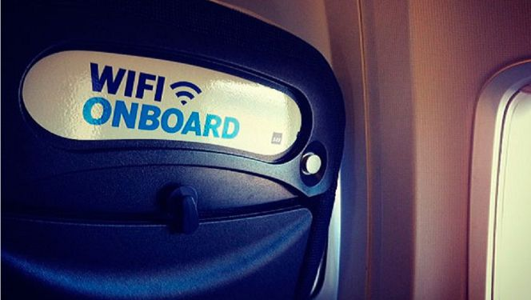

- Las velocidades de trasmisión son más altas que la Wi -Fi.
- 10.000 veces el espectro de frecuencias de la radio.
- Más seguro porque los datos no pueden ser interceptados sin una línea de visión clara.
- Evita que lleve a cuestas.
- Elimina las diferentes interferencias de red.
- Sin trabas de las interferencias de radio.
- No crea interferencias en equipos electrónicos sensibles, por lo que es mejor para el uso en ambientes como hospitales y aviones..
